Zoho Sheet - View, edit
spreadsheets
on your handhelds
Overview
Zoho Sheet is an online SaaS-based spreadsheet application in the Zoho docs suite. Given the role of the product designer, I was responsible for designing mobile products for the existing web application. The primary goals were to design an intuitive mobile application that allows users to view, edit, share spreadsheets on the go. Spreadsheets were always complex for people who worked on it and we tried to simplify the experience on a mobile device thorugh this project.
Project Type & Involvement
Work for Zoho Corporation - Product Design
Timeline
Jan 2016 - May 2017
Platform
iOS & Android
My Role
I was the sole product designer working on the mobile products right from scratch by strategising, conceptualizing, designing and delivering the hand-offs to the developers working for multiple platforms. My primary responsibilities included defining the product strategy, the vision for the product, wireframing low fidelity designs to prototyping high fidelity designs and collaborating with the product managers and developers by managing the entire design lifecycle in bringing out the product live.
Problem: The need for the application
1. Lack of applications to view, edit spreadsheets on handhelds.
2. The web app users were demanding a mobile application which could eventually result is customer drop rate.
3. Strong count of web applciation users could not use the application on mobile paltforms.
Vision and strategy
The vision was to build minimum viable features that in a quick span of time as the users did not have a version of the mobile application and we had the risk of losing customers because of the same. Identifying the features that users wanted and designing the product with the agile methodology was the strategy that was inherited to bring out an efficient product and usable product.
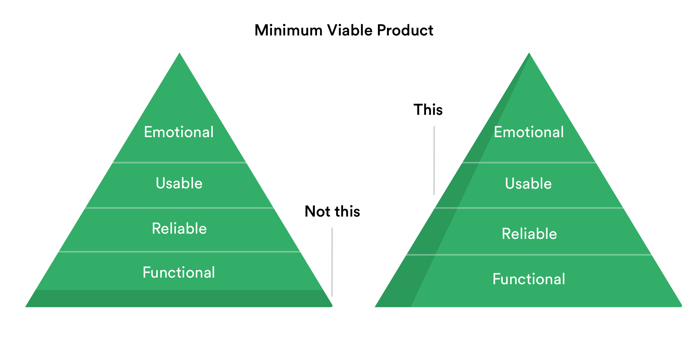
Designing the Agile way
The product was meant to reach the users as soon as possible since this was the first version of the product and the evolving mobile world demanded a need for it. Hence, the agile methodology was defined to bring out the product quickly. Each step of the process was very quick and at its best pace contributing to the development of the product. The agile methodology process is as shown below

Desktop vs mobile: A study about mobile users
It was important to know about mobile users before designing the product as the users in this category are much more different than desktop users. They want to get tasks done as quickly as possible and used it whenever they don't have access to their desktop or web application. Users need to accomplish their goals quickly and efficiently. Some qualities learned about mobile users are below.
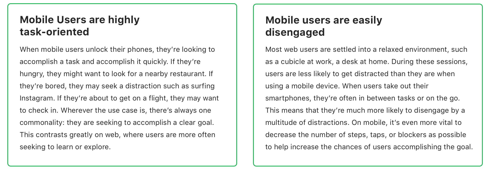
User Interviews - Inquiring users for valuable insights
Initially, we identified and talked to some spreadsheet users and categorized and asked a few questions with regard to their usage on daily basis in a mobile spreadsheet software to each category. The users were primarily web users and also who were using alternate mobile spreadsheet software currently. These answers were the base to start designing features for version one.
- The common features they use?
- Features they wanted to use in a mobile spreadsheet app?
- What are the tasks they do on daily basis in a mobile spreadsheet?
- Circumstances under which they use the mobile app?
- How often do they use spreadsheets?
Insights from the interviews
We categorized them into three classes and Summarised the feature level insights initially from each user group. They are as below
Beginners
Uses spreadsheet atleast once in 10 days
Most users wanted to view the shared spreadsheet or use basic formatting options in the application. They wanted the maximum real-estate in the application to view the spreadsheet and share the same with collaborators and export it in a readable format(i.e)PDF.
Mid-Level
Uses spreadsheet atleast once in 3 days
Users in this category used to view, edit or share spreadsheets when they were away from their computers. Most of the users frequently viewed the existing spreadsheets created from their personal computers and preferred to have options such as alignment, text colour, cell colour and some minor functions & formulas.
Power Users
Uses spreadsheets everyday
These people were an important user group who does everything from their mobile. This user group were power users whose everyday work depends on a spreadsheet. They wished to have at least basic formatting, sharing, collaboration and formulas & visualizations to apply to their data.
Other Key Insights
Other than the feature oriented insights there were few other common attributes identified from the users.
Ideation: Zeroing in the features
From the research, We narrowed down the primary feature set for version one which makes it a minimum viable one. All the sub features were categorised under these primary set of features. They are as below.

Detailed Features & workflow
The research result clearly showed that the participants would want to have the basic features that helped us to nail the workflow for the product, phasing the strategy and a clear product feature roadmap. All the items below were validated and finalized based on our user needs, engineers and tech feasibility and the business vision.
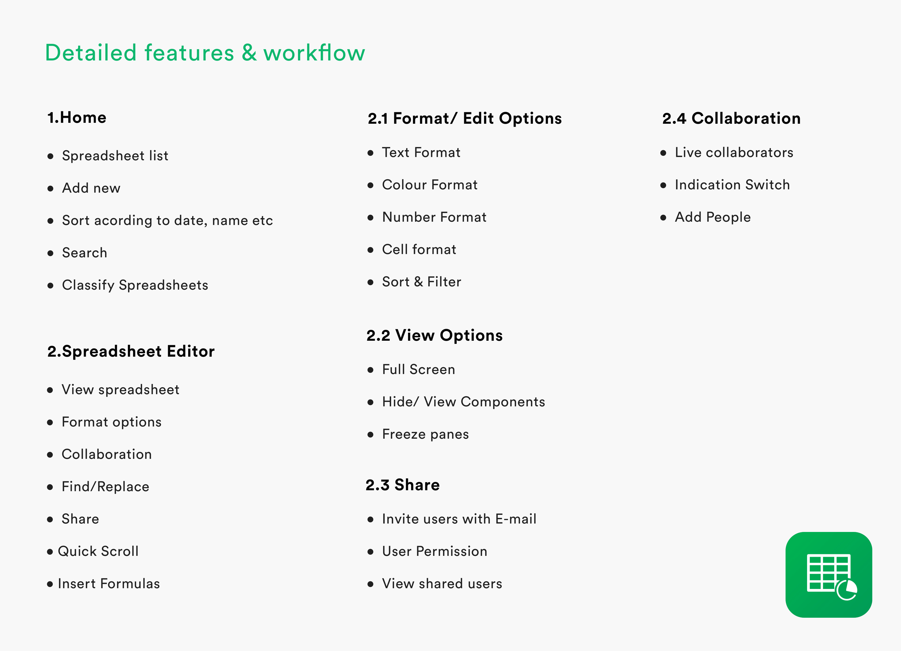
User-Flow Diagram
Designing for the user experience began from sketching out a typical user journey based on the accomplishment of specific tasks within the app. Once the user journey had been established, we began to unpack the design flow for general and specific use cases.


Conceptualization and Sketching
After finding out the basic requirements of the user, the key features were identified and ideated. Sketching helped us as we followed an agile method to quickly get an idea of how the product is going to shape and give a rough idea of the concepts.

Low-Fi Prototypes
The Low fidelity prototypes helped us take the sketches to a next level but a step before the high-fidelity mockups. Simple prototypes were of great use in identifying components for framing the design system and also to get an initial feedback from the team before we stepped into concentrating on the visual design which required a mamonth effort.
Framing a Component based design system for multiple platforms
A design system was created for each operating system incorporating the set of visual elements like colour, typography and UI components. These components were, in turn, converted as symbols in sketch to use the elements throughout the application. This not just helped me in design but also allowed developers to reuse components increasing code efficiency.
Read the detailed product design process
Designing my first platform agnostic SaaS product.
"The inside process and takeaways from designing the first version of Zoho Sheet — a SaaS based spreadsheet application on mobile platforms."
Final Product: The minimum viable features
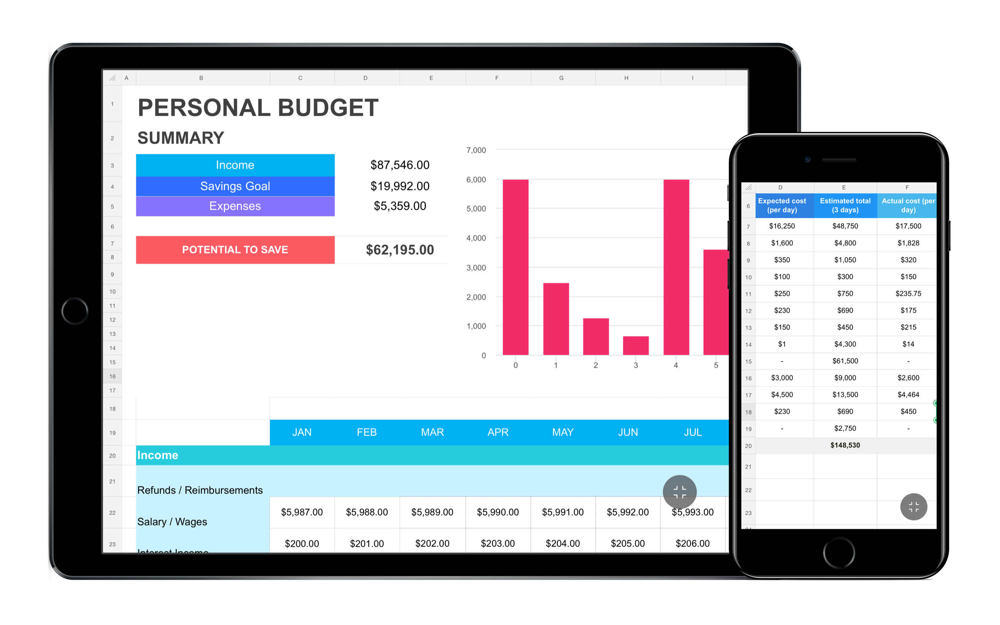
View Spreadsheets
The primary function of the application that most users expected was to view spreadsheets when they are on the go and also that was the first basic feature we built and laid the foundation to the product.
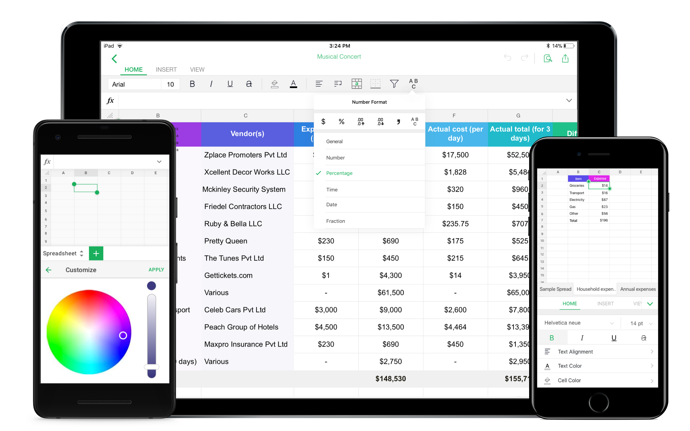
Format/Edit Spreadsheets
Almost every user from the inquiry expected the basic editing functionalities to a spreadsheet application like text style, colours, merge cells etc and we made sure that these are the next layer we are going to build over the foundation that we laid.
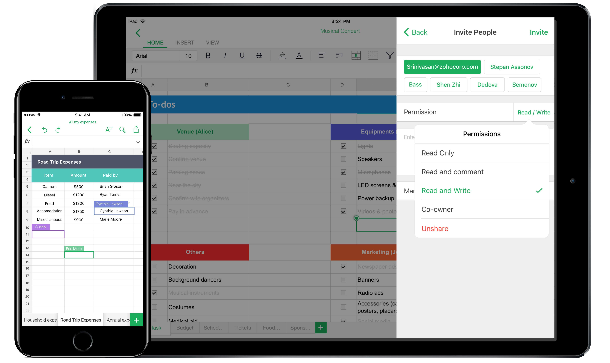
Collaboration & Sharing
Collaboration and sharing is the most important feature that every document application should have which allows users to quickly share the spreadsheet with their team members or other users when they are on the go. This allows them to review and make quick changes if any and instantly share it. Also, live collaboration allows the user to co-author a document efficiently with ease.
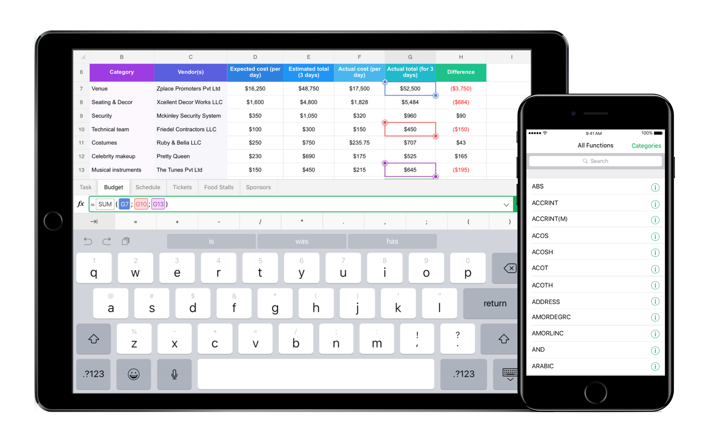
Calculate using formulas
Being a vital feature of every spreadsheet application, formulas are used to perform calculations that are required to facilitate the understanding of data. There are over 250 functions to choose from for calculating complex data. Although beginners and intermediate users don't use formulas as much as power users on mobile platforms these quick functions are handy when there is a need.
Detailed view of some important features
iOS App Screens
The iOS applications followed the Human Interface Guidelines and the components were based out of the native components to comfort the user with the familiar elements of the platform. Also, this helped the developers to quickly develop the application since they were available already and required a minimum effort yet and an efficient one.
Android App Screens
The application was designed adhering to the material design guidelines with bold colors and typography and imagery with native components. Few components were custom designed to accommodate the needs of an interface or a feature still maintaining the coherency of the product.
Validation: Evaluating interfaces and usablity
The people whom we involved in evaluating the solutions involved people both new spreadsheet users and power users who were regularly using spreadsheets in their day to day tasks. Each user was given the same task sheet with different variants of the user interface to carry out A/B testing and multivariate testing in order to determine the finest one in terms of usability and functionality.

Re-designing some important components
The function bar
The function bar is the one on which the user inputs data, formulas etc. There were many iterations of the function bar as this is one of the primary component and where the 90% of the users land when there is a need to input data. The function bar was kept at the bottom for the comfort of the user's eyes and also increase reachability for the user. Also, the user need not juggle his eyes top and bottom to have a look at the function bar and the keyboard.
Analysing the competitors
When analysing similar applications, 99% of the applications had the function bar at the top. We thought we will try a similar kind of approach for our application. Few screens which we analysed are as below.

Initial Iterations
Initiallly we iterated multiple solutions with the same approach as the other competitors and the desktop version by having the function bar at the top. But when testing it with the users we figured out that it was not intuitve and was not serving the purpose of doing the task easily. Also with the larger devices coming to play it was not reachable for the user.
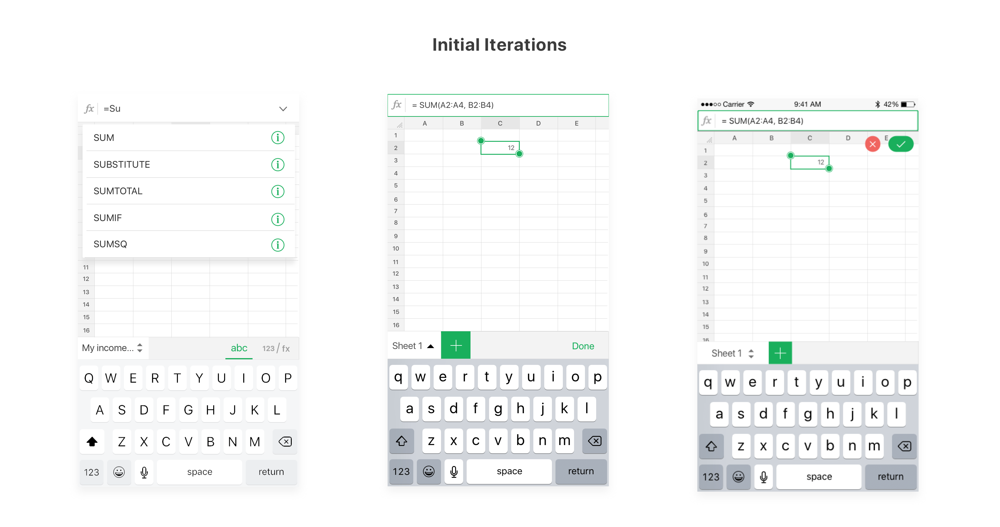
Solution
The thought process was to place the function bar in a not disturbing place when the user is viewing, but also to be in the right place when the user wants to input data and also to be close to all the input actions like the keyboard, confirmation button etc. The solution was to show the function bar at the top which they can enable or disable in the menu when viewing and bring it to the bottom when editing which makes it easier for the eyes to view and hands to get all the inputs easily.
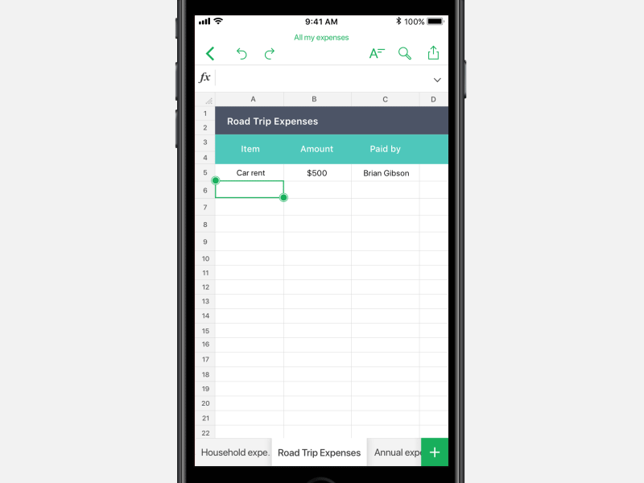
Designing a custom keypad
A custom keyboard was required in order to make the data input efficient and easy. We spoke to spreadsheet users of all types from power users to novice users. We finally zeroed 20 symbols as the most wanted symbols and iterated multiple sets of keyboards for both the iPhone and iPad using them. Two variants were made as prototypes and tested with users of the above-mentioned categories. A/B testing both the keyboard proved to be serving the purpose but not in an efficient way.
Iterating multiple solutions
We worked hard on it and started exploring the solutions for multiple platforms, form factors and orientations. The whole process consumed at least a month to zero in on the solution which would be suitable. The developers did have a tough time to develop a few solutions roughly for us to get an idea. We even did internal testing of how the users were able to achieve their goals quickly. But we figured out that the users were conscious when switching keyboards and were not naturally comfortable doing the same. Hence we thought of an alternate solution to this.

Solution
Although we iterated multiple solutions for the custom keypad, the users always felt that there was an extra step to use the custom keypad which made them deviate away from their goal. Hence we came up with an idea called smart bar where the sheet tab converts into a custom symbol set and formula suggestions contextually. This naturally allowed the users to enter symbols with easy without the need to switch keypads often.

Icing on the cake: Leveraging the power of native platforms
iOS Add-ons
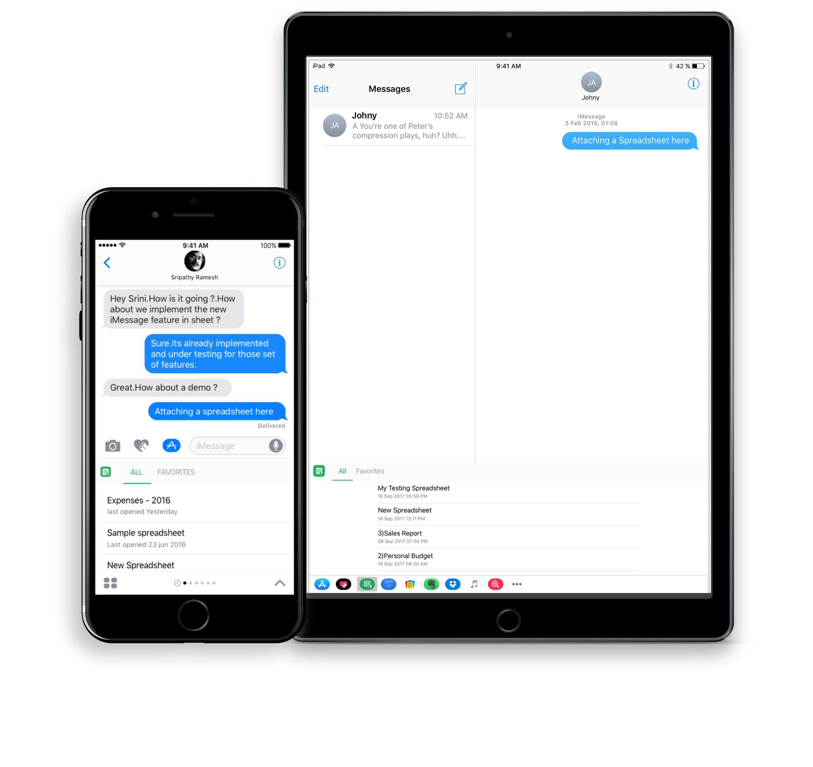
Send documents via iMessage
Zoho Sheet was the first application to allow users to send spreadsheets via iMessage. Users can send documents to other iOS users through this. The users will be able to view the spreadsheet sent to them even if they don't have an application through HTML rendering.

Widgets | 3D Touch
The widgets provisioned users to access the most used spreadsheet without having the need to open the application everytime which reduces an extra step for users who are constantly accessing the same spreadsheets every day. The 3D Touch functionality also provides users to quickly create a new spreadsheet or access their favourite spreadsheet at ease.

Splitview on iPad
The Split view enabled users to bring documents, images, text directly into the spreadsheet by just dragging and dropping elements minimizing the need for the user to switch between application to bring in elements they need inside the spreadsheet.
Android Add-ons
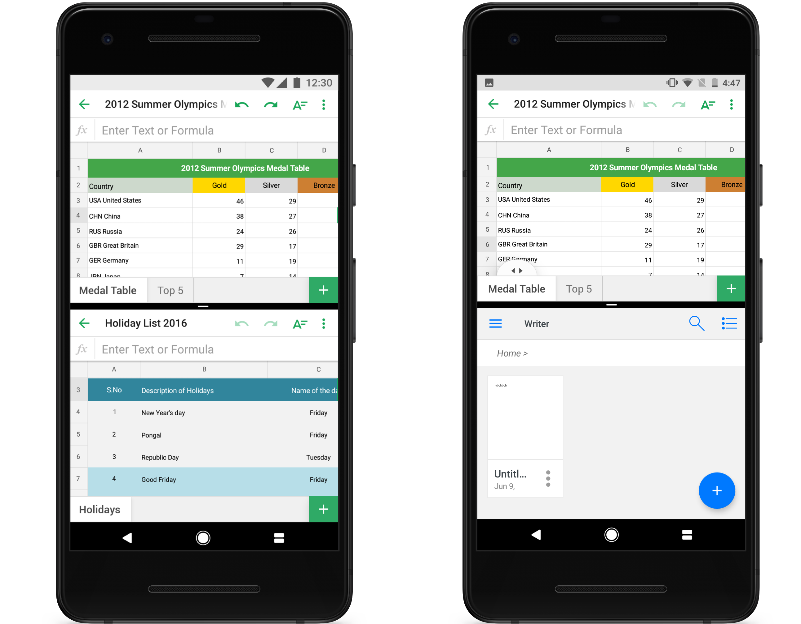
Multi-window Support
The native multiwindow support provides the user an ability to simultaneously work on another application while working on Zoho Sheet. Also, when there are more than one spreadsheet open they are opened as separate activities facilitating the user to work on multiple spreadsheets at once. Thanks to the engineering team who helped in acheiving this. :)
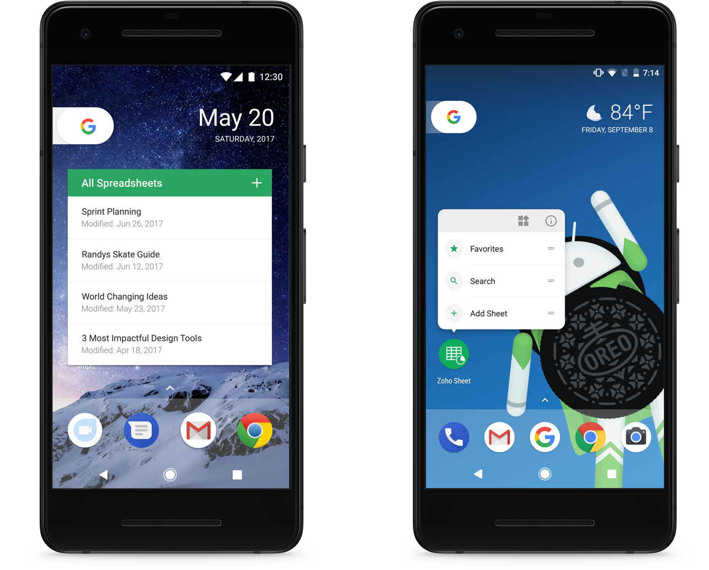
Quick Actions & Homescreen widgets
The Home screen widgets provisioned users to access the most used spreadsheet without having the need to open the application everytime which reduces an extra step for users who are constantly accessing the same spreadsheets every day. The Quick actions functionality also provides users to quickly create a new spreadsheet, search or access their favourited spreadsheet at ease.
The Impact and acheiving success metrics
Zoho Sheet's iOS version was launched in May 2016 and the Android version on December 2017 that onboarded multiple web product users into the mobile product. Receiving almost a 90% liking from the people who have used the product, it was a big impact competing with the tech giants in the same industry. Also, the app was a part of the Zoho One suite comprising of the major products from the company. Here are some reviews found on the respective platform stores
Version 2 - Shift towards efficiency and value proposition
The version 2 of Zoho Sheet involved a lot of feature additions which could transform the way spreadsheets would work on mobile platforms and a small visual overhaul which supported the then latest iPhone X. Also, the application was integrated to support Apple Watch which was used for quick comment replies and more. I could not disclose more as a lot of features has not been built yet. Some shipped features are real-time comments and Picture to data which. Refer the prototypes below to view them.

Reflection & Takeaways
Not everytime a designer gets a golden opportunity to design an end to end product with a large consumer base. I cherish this opportunity which helped me in improving myself as a product designer impacting thousands of people and business. Here are few key takeaways in the process.
I was able to narrow down the features for the first version of the product by learning about the users and their goals they want to achieve on using the product.
Spreadsheet applications are usually considered as an application involving a huge volume of data and calculations. When I started the process it looked very complex, later I learned, collaborated, elevated myself throughout and now I have got a motive to solve scalable problems.
Ability to collaborate across cross-functional teams is an essential quality of a product designer. I got to collaborate with managers, developers working on multiple platforms, quality assurance team, marketers to bring out the product to the customers. This helped me in accomplishing the goals as a team.
Setting goals and planning them according to timelines was one of the challenging aspects. Though the project was timeboxed we managed to bring out a successful minimum viable product that served the users.
Additional Discussion
Points which are not covered in this case study but could be worth discussing in person:
• The detailed visual design process.
• Sketching alternative ideas & variants.
• Elaborated User testing.
• Design decisions across the app.
• Detailed prototypes for multiple platfroms.